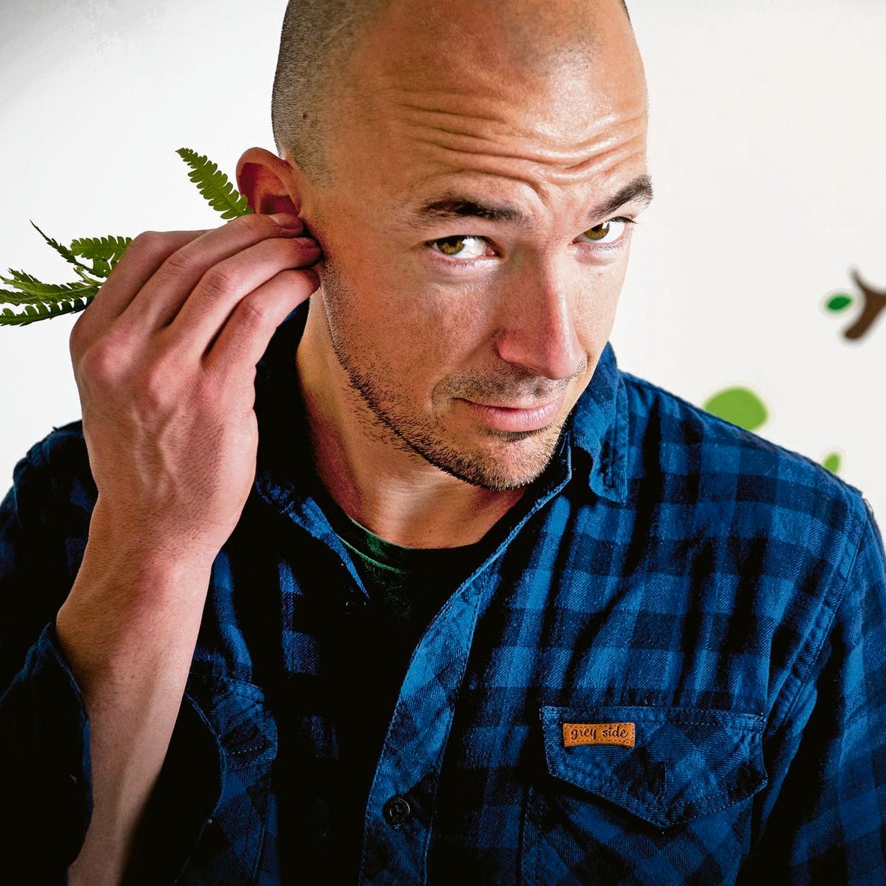

Using methods from anthropology and psychology, Sheina Lew-Levy conducts research in hunter-gatherer societies to understand the cultural diversity in, and evolution of, social learning in childhood. She is currently a postdoctoral researcher at the Max Planck Institute for Evolutionary Anthropology.

Edwin van Leeuwen has studied psychology (Bsc. and Msc.) with specializations in (evolutionary) philosophy at Maastricht University in the Netherlands. After obtaining his master’s degree (2007), he started working with chimpanzees in the Chimfunshi Wildlife Orphanage Trust in Zambia, first as a research-assistant (2007-2010), later as a PhD student (2011-2014) supported by the Max Planck Institute for Evolutionary Anthropology in Germany. During his time in Chimfunshi, he co-founded the Chimfunshi Research Advisory Board, which he leads as the Chair to present date. Between 2015-2018, Edwin was a postdoctoral research fellow at the School of Psychology and Neuroscience in St. Andrews, Scotland, after which he obtained an independent postdoctoral fellowship at the Research Foundation Flanders (2018-2022), executed in the Apelab group at Antwerp University, Belgium. As of 2022, Edwin is an assistant-professor at Utrecht University (Animal Behaviour & Cognition) in the Netherlands, where he will execute his recently obtained ERC Starting Grant on cultural dynamics in primates.
Nicole Walasek is a postdoctoral researcher at Utrecht University interested in the evolution and development of sensitive periods – time periods during which experiences have a particularly large impact on development. She uses mathematical models to explore how different environmental conditions, such as environmental change, shape patterns of sensitive periods across development. She is also interested in developing a statistical framework for studying environmental stability and change in empirical data.
Willem Frankenhuis is an Associate Professor of Psychology at Utrecht University and a Senior Researcher at the MPI for Research on Crime, Security and Law. He studies the evolution and development of cognition and behaviour. His theoretical work uses mathematical modeling to explore the evolution of developmental plasticity, the ability to tailor individual development to environmental conditions; and in particular sensitive and critical periods, in which the impact of experience on phenotype is larger than in other periods. His empirical work focuses on ‘hidden talents’, abilities that are enhanced by adversity, and ‘reasonable responses’, behaviors that can be understood as a response to the costs and benefits faced by people living in poverty.
Mason Youngblood is a postdoctoral researcher studying cultural evolution in the Minds and Traditions Research Group at the Max Planck Institute for the Science of Human History. He is interested in understanding how cognitive biases, population structure, and other factors influence cultural evolutionary outcomes in both humans and non-human animals. To do this, he applies computational methods like agent-based modeling and machine learning to big datasets to infer the underlying processes that generated them.
Elena Miu is a cultural evolutionist interested in understanding the dynamics of cultural change across domains. She has been using theoretical models and large-scale datasets to understand the drivers and dynamics of cumulative cultural evolution, as well as the social learning mechanisms involved in this phenomenon. She is now a post-doc at the Max Planck Institute for Evolutionary Anthropology in Leipzig working with Heidi Colleran, where she is using ethnographic data and advanced statistical techniques to understand the cultural evolution of reproductive norms.